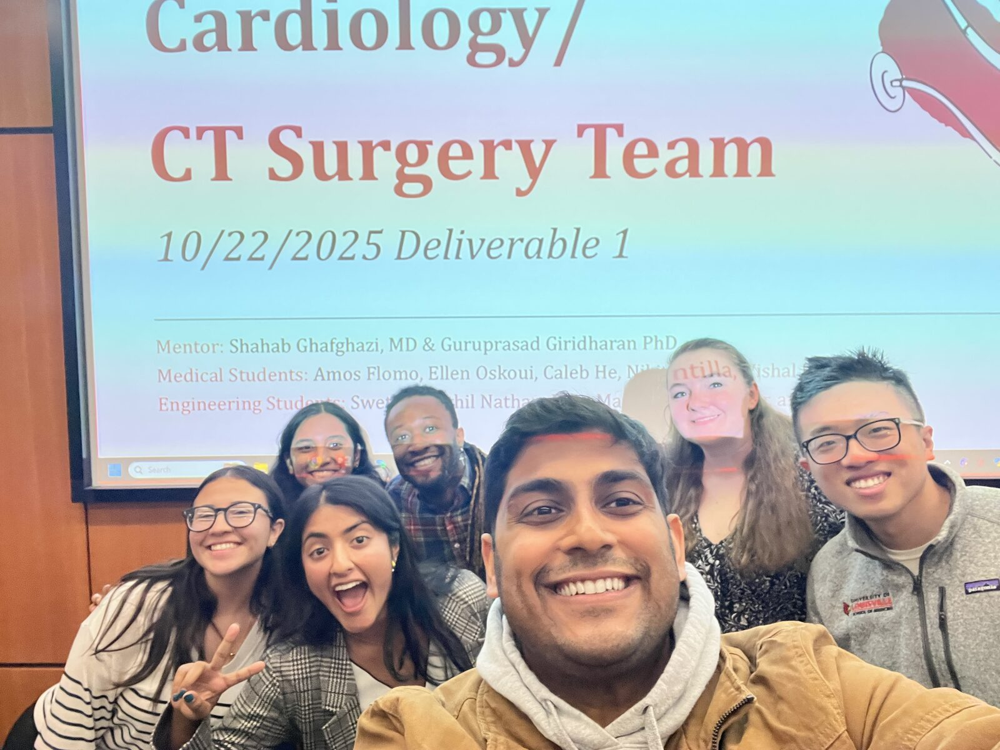
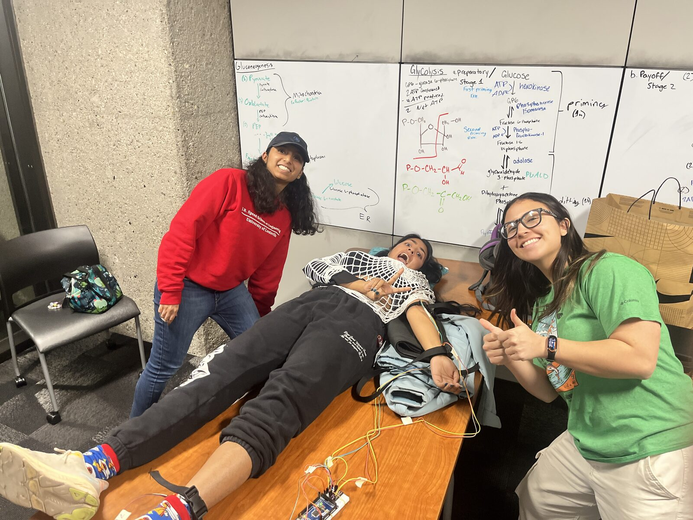
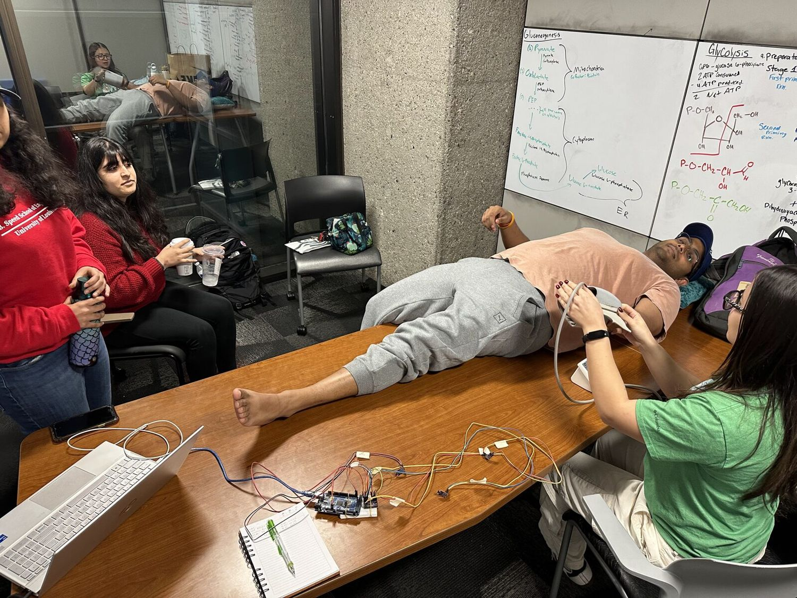
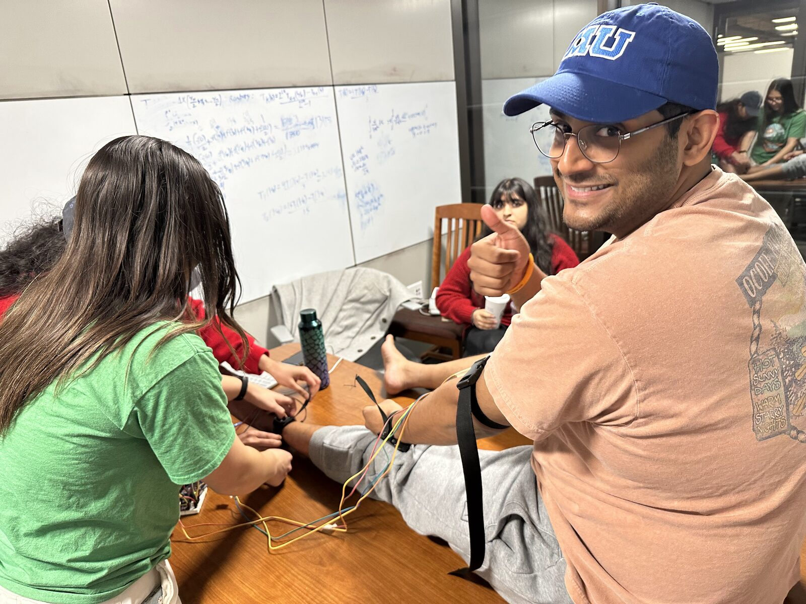
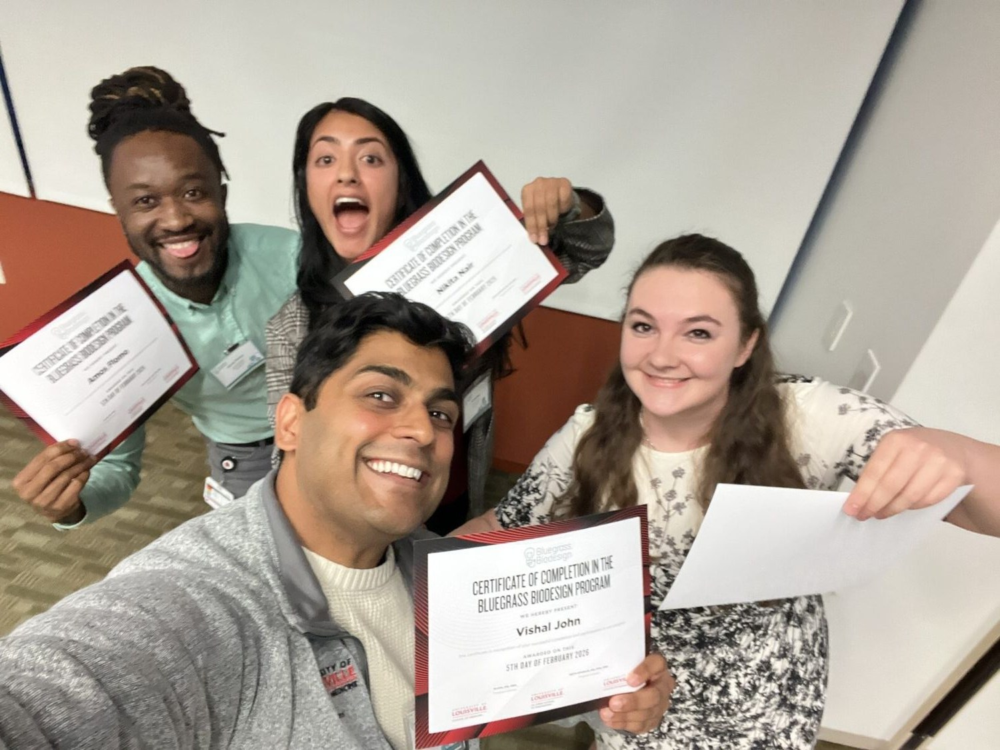

Bluegrass Biodesign
Cardiology / Cardiothoracic Surgery Team · University of Louisville · 2025 – 2026
What is Bluegrass Biodesign
Bluegrass Biodesign is a nine-month interdisciplinary innovation program at the University of Louisville that trains the next generation of medical device developers. Students from the School of Medicine, College of Business, and J.B. Speed School of Engineering work in multidisciplinary teams to identify unmet clinical needs, design solutions, prototype devices, and validate them against real-world constraints.
The program is grounded in the Stanford Biodesign framework — a structured methodology moving from clinical need-finding through prototyping and market validation. All teams complete business training through UofL's NSF-funded I-Corps program, receiving funding and mentorship to bring their ideas to life.
Our Device
Our team worked in the Cardiology and Cardiothoracic Surgery space, identifying an unmet clinical need through direct observation and physician interviews with our mentors Dr. Shahab Ghafghazi, MD and Dr. Guruprasad Giridharan, PhD. Working alongside medical students Amos Flomo, Ellen Oskoui, Caleb He, and Nikita Nair, and our engineering teammates, we designed, prototyped, and tested a device aimed at improving outcomes in the CT surgery setting.
Prototyping involved everything from late-night study sessions with circuit boards to using each other as test subjects — all in the spirit of actually making something that works.
Gallery




Drag to spin · click a photo to enlarge